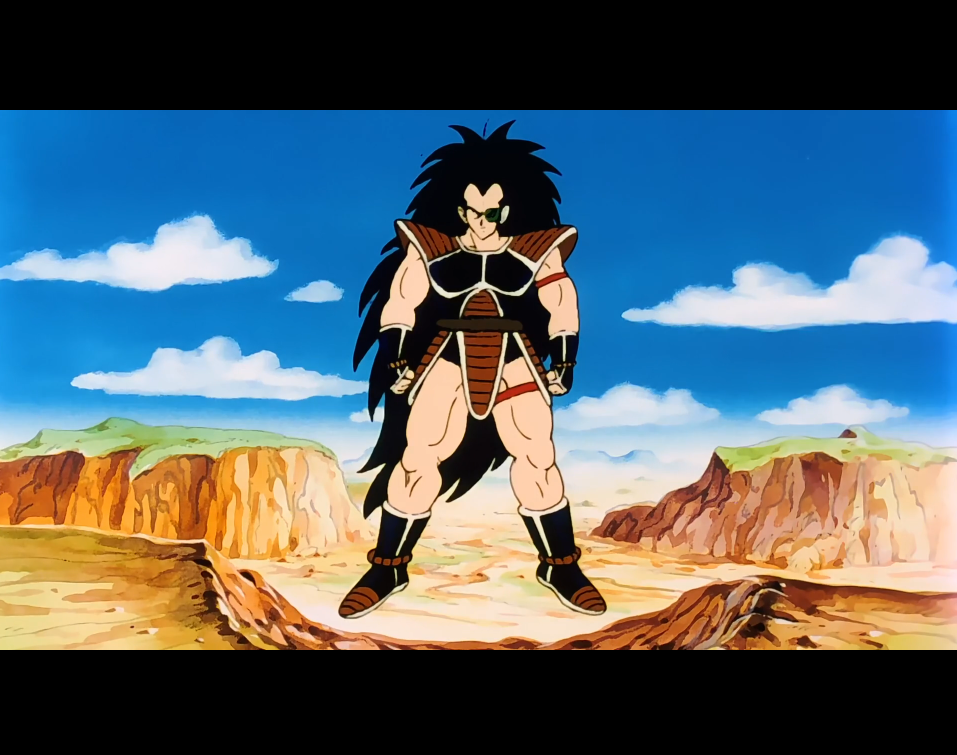
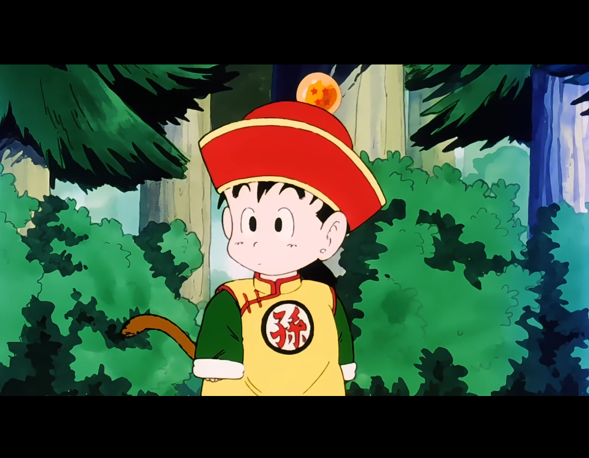

La première saison, regroupant les épisodes 1 à 39, a été diffusée du 26 avril 1989 au 7 mars 1990. Réalisée par Daisuke Nishio et écrite par Takao Koyama, elle couvre trois arcs narratifs : l'arrivée de Raditz, le combat contre Nappa et Végéta, ainsi que les premiers événements du voyage vers la planète Namek.
Cinq années se sont écoulées depuis la victoire de Son Goku face à Piccolo. Un mystérieux extraterrestre débarque sur Terre à bord d'une capsule spatiale, à la recherche de son frère. Après avoir détecté une importante puissance, il se lance à sa poursuite, tout en s'étonnant que la planète soit encore intacte.
De son côté, Son Goku part à la recherche de son jeune fils, qui préfère explorer les environs et observer les animaux plutôt que de rester tranquille. Au cours de ses aventures, ce dernier échappe de justesse à la mort après une chute vertigineuse depuis une cascade, grâce à un mystérieux pouvoir surnaturel.
Pendant ce temps, l'étranger croise la route de Piccolo. Cependant, jugeant sa puissance insuffisante, il esquive facilement ses attaques avant de poursuivre sa quête à la recherche d'un adversaire bien plus puissant.

Premier épisode de la série Dragon Ball Z, celui-ci s'intéresse principalement à l'arrivée de Son Gohan dans la série.
